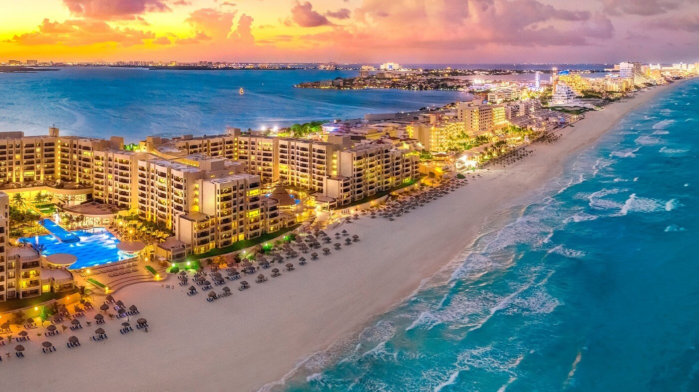

Mapa interactivo
Riviera Maya
Cancun
Cancún es reconocido en todo el mundo por sus espectaculares playas de arena blanca y su fascinante mar en tonos azul turquesa. Con lugares naturales únicos, cultura maya, actividades acuáticas y de aventura. Gastronomía internacional, espectaculares campos de golf, sofisticadas instalaciones de spas; exclusivos centros comerciales, mercados típicos de artesanías así como espectáculos, bares y centros nocturnos que dan fama a su incomparable vida nocturna.

Isla Mujeres
Puerto Morelos
Se encuentra 32 kilómetros de Cancún. Allí encontramos el Parque Nacional Arrecife de Puerto Morelos, un área natural protegida, en donde se halla una barrera de arrecifes con una gran variedad de peces.

Playa del Secreto
Playa Maroma
Playa Maroma
Playa del Carmen
La ciudad más grande de la Riviera Maya que ofrece todo tipo de servicios turísticos disponibles. Famosa y popular por dos de sus grandes atractivos: la Quinta Avenida, y la zona hotelera Playacar.

Xcaret
Xcaret es un parque acuatico, tematico, de diversiones, eco-arqueologico y más, en un solo lugar.


Isla Cozumel
Akumal
Es el lugar de las tortugas. La cultura maya le ha dado este nombre a esta espléndida bahía de aguas cristalinas debido a que su playa es el sitio elegido por las tortugas para llevar a cabo su ciclo reproductivo.
Tulum